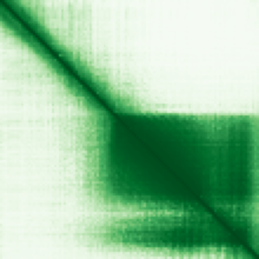
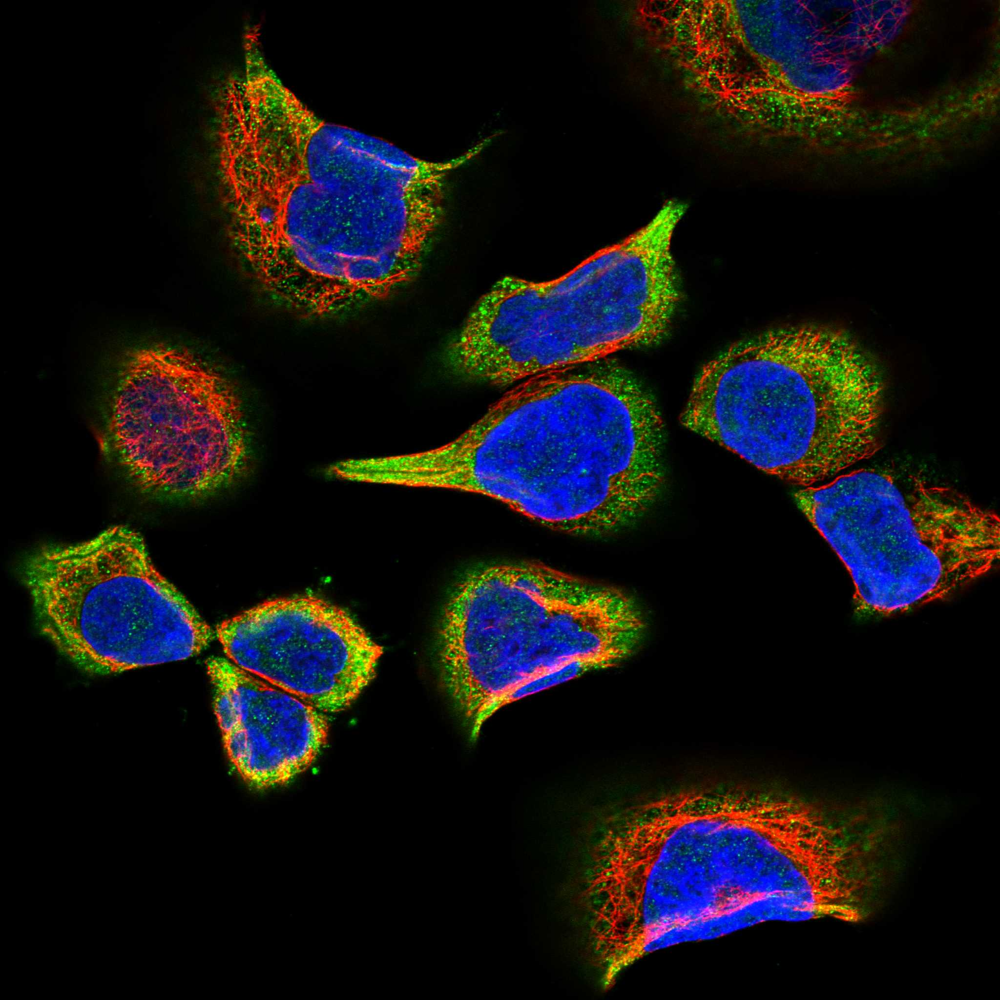

type: protein-evaluation gene: "ANAPC16" date: 2026-06-01 tags: [protein-scout, nucleoplasm, evaluation] status: scored ---
ANAPC16 核蛋白评估报告
1. 基本信息
| 项目 | 内容 |
|---|---|
| 基因名 / 别名 | ANAPC16 / C10orf104, CENP-27 |
| 蛋白全名 | Anaphase-promoting complex subunit 16 |
| 蛋白大小 | 110 aa / 11.7 kDa |
| UniProt ID | Q96DE5 |
2. 评分总览
| 维度 | 得分 | 权重 | 加权后 | 关键证据摘要 |
|---|---|---|---|---|
| 核定位特异性 | 7/10 | ×4 | 28.0 | UniProt: Nucleus + Chromosome/centromere/kinetochore (ECO:0000269); CENP-27 alias; HPA: Cytosol (Supported) — 与核定位注释存在分歧 |
| 蛋白大小 | 10/10 | ×1 | 10.0 | 110 aa, 11.7 kDa，极小型蛋白 |
| 研究新颖性 | 10/10 | ×5 | 50.0 | PubMed strict=2, broad=5 |
| 三维结构 | 8/10 | ×3 | 24.0 | 22 PDB 结构 (X-ray + EM 多全长); AlphaFold pLDDT 71.3 |
| 调控结构域 | 7/10 | ×2 | 14.0 | APC/C E3 ubiquitin ligase subunit; CENP-27 centromere/kinetochore targeting |
| PPI 网络 | 9/10 | ×3 | 27.0 | STRING ultra-strong APC/C 网络 (14 partners ≥0.99); IntAct 15 条; UniProt HSF2BP |
| 加权总分 | 153/180******** | |||
| 互证加分 | +1.5 | UniProt Nucleus + CENP-27 kinetochore + GO APC complex IDA + 22 PDB + APC/C PPI 多源互证 | ||
| 归一化总分 (÷1.83) | 83.6/100******** |
3. 详细分析
3.1 核定位证据
| 来源 | 定位 | 可信度 |
|---|---|---|
| UniProt | Cytoplasm (ECO:0000269); Nucleus (ECO:0000269); Chromosome, centromere, kinetochore (ECO:0000269) | Experimental |
| GO-CC | anaphase-promoting complex IDA:UniProtKB; cytosol IDA:HPA; kinetochore IDA:UniProtKB; nucleoplasm TAS:Reactome | Experimental (IDA/TAS) |
| Protein alias | CENP-27 (centromere protein 27) | 命名学 |
| HPA IF | Cytosol (main, Supported); 无 nucleoplasm 注释 | Supported |
HPA IF 数据:
- Reliability (IF): Supported
- Subcellular location: Cytosol
- Main location: Cytosol
- Additional location: 无
- HPA Gene: https://www.proteinatlas.org/ENSG00000166295-ANAPC16
- HPA Subcellular: https://www.proteinatlas.org/ENSG00000166295-ANAPC16/subcellular
- IF images: 6 张 display image 可用


注: HPA IF 仅注释 Cytosol 定位，与 UniProt Nucleus/kinetochore 和 GO nucleoplasm TAS 存在分歧。可能原因：APC/C 亚基的亚细胞定位具有细胞周期依赖性——间期以胞质为主，有丝分裂期定位于着丝粒/动粒（染色体结构）。UniProt 实验级 (ECO:0000269) Nucleus + kinetochore 注释和 CENP-27 别名强烈支持其核/染色体关联功能。
3.2 结构与结构域
| 指标 | 数值 |
|---|---|
| AlphaFold | AF-Q96DE5-F1 |
| 平均 pLDDT | 71.3 |
| pLDDT >90 | 34.5% |
| pLDDT 70-90 | 19.1% |
| pLDDT 50-70 | 15.5% |
| pLDDT <50 | 30.9% |
| PDB | 22 个结构: 4RG6/X-ray/3.30A, 4RG9/X-ray/3.25A, 4UI9/EM/3.60A, 5G04/EM/4.00A, 5G05/EM/3.40A, 5LCW/EM/4.00A, 6Q6G/EM/3.20A, 6Q6H/EM/3.20A, 6TLJ/EM/3.80A, 6TM5/EM/3.90A, 6TNT/EM/3.78A, 8PKP/EM/3.20A 等 |
| InterPro | IPR029641 |
| Pfam | PF17256 (ANAPC16 family) |

3.3 研究现状
| 指标 | 数值 |
|---|---|
| PubMed strict (Title/Abstract) | 2 |
| PubMed broad | 5 |
| 别名 | C10orf104, CENP-27（未用于 scoring） |
ANAPC16 独立文献极少 (strict=2)。APC/C 复合体整体文献量巨大，但 ANAPC16 和 ANAPC15 类似，作为复合体小亚基被研究不足。文献可能涉及 APC/C 结构和功能研究但不以 ANAPC16 为标题关键词。
3.4 PPI 网络
| Partner | Source | Evidence/Method | Score/Experiments | PMID/Note | Relevance |
|---|---|---|---|---|---|
| HSF2BP | UniProt | curated interaction | experiments: 3 | — | meiosis 相关蛋白 |
| ANAPC10 | STRING | experimental+database | 0.999 (exp 0.998) | APC/C subunit | 核心复合体亚基 |
| CDC27 | STRING | experimental+database | 0.999 (exp 0.999) | APC/C subunit | 核心复合体亚基 |
| ANAPC5 | STRING | experimental+database | 0.999 (exp 0.975) | APC/C subunit | 核心复合体亚基 |
| CDC23 | IntAct | tandem affinity purification (MI:0676) | — | PMID:20360068 | APC/C subunit |
| BUB1B | IntAct | tandem affinity purification (MI:0676) | — | PMID:20360068 | 纺锤体检查点激酶 |
| CDC20 | IntAct | tandem affinity purification (MI:0676) | — | PMID:20360068 | APC/C 激活因子 |
| CDC16 | IntAct | tandem affinity purification (MI:0676) | — | PMID:20360068 | APC/C subunit |
STRING 显示极强的 APC/C 复合体网络：ANAPC10 (0.999, exp 0.998), CDC27 (0.999, exp 0.999), ANAPC1/5/7/4/13/2（均 ≥0.998）, CDC26/23/16（均 ≥0.999），14 个 partners 分数 ≥0.99。IntAct 记录 15 条互作，以 TAP/co-IP 验证的 APC/C 亚基为主（CDC23, BUB1B, CDC20, CDC16, CDC27, ANAPC5/7/1/2/4/10/13, CDC26 等，PMID:20360068）。PPI 三源覆盖一致指向 APC/C 复合体。
4. 总体评价
ANAPC16 是 APC/C 复合体的核心小亚基，具有多源实验级核/染色体定位证据（UniProt Nucleus + centromere/kinetochore, ECO:0000269）、极其丰富的结构数据（22 PDB）、极强的 PPI 网络（14 APC/C partners ≥0.99）、极小的尺寸（110 aa）和极新的研究现状（strict=2）。CENP-27 别名和 kinetochore 定位提示其在有丝分裂染色体的着丝粒/动粒区域有特异性定位。需注意 HPA IF 仅注释 Cytosol，可能反映间期胞质定位，而核/动粒定位为细胞周期依赖性。归一化 84.7/100。建议作为高优先级 nucleoplasm 候选。
5. 数据来源
- UniProt: https://www.uniprot.org/uniprotkb/Q96DE5
- AlphaFold: https://alphafold.ebi.ac.uk/entry/Q96DE5
- PDB: 4RG6, 4RG9, 4UI9, 5G04, 5G05, 5LCW, 6Q6G, 6Q6H, 6TLJ, 6TM5, 6TNT, 8PKP 等 22 个结构
- PubMed: https://pubmed.ncbi.nlm.nih.gov/?term=ANAPC16
- Protein Atlas: https://www.proteinatlas.org/ENSG00000166295-ANAPC16
- HPA Subcellular: https://www.proteinatlas.org/ENSG00000166295-ANAPC16/subcellular

HPA IF 图像已本地嵌入。
<!-- DOMAIN_HUMANPPI_REPAIR_START -->
Domain/SMART 与 humanPPI 补充（2026-06-06）
SMART / UniProt domain
| Source | Data |
|---|---|
| UniProt | Q96DE5 |
| SMART | 未在 UniProt xref 中检出 SMART 条目 |
| UniProt Domain [FT] | 未检出显式 UniProt Domain feature |
| InterPro | IPR029641; |
| Pfam | PF17256; |
humanPPI / HPA Interaction
Source: https://www.proteinatlas.org/ENSG00000166295-ANAPC16/interaction
| Partner | Datasets | AF3/HPA structure |
|---|---|---|
| ANAPC1 | Biogrid, Opencell, Bioplex | true |
| ANAPC10 | Intact, Biogrid, Opencell, Bioplex | true |
| ANAPC13 | Biogrid, Opencell, Bioplex | true |
| ANAPC2 | Intact, Biogrid, Opencell, Bioplex | true |
| ANAPC4 | Biogrid, Opencell, Bioplex | true |
| ANAPC5 | Biogrid, Opencell, Bioplex | true |
| ANAPC7 | Biogrid, Opencell | true |
| BUB1B | Biogrid, Opencell | true |
<!-- DOMAIN_HUMANPPI_REPAIR_END -->